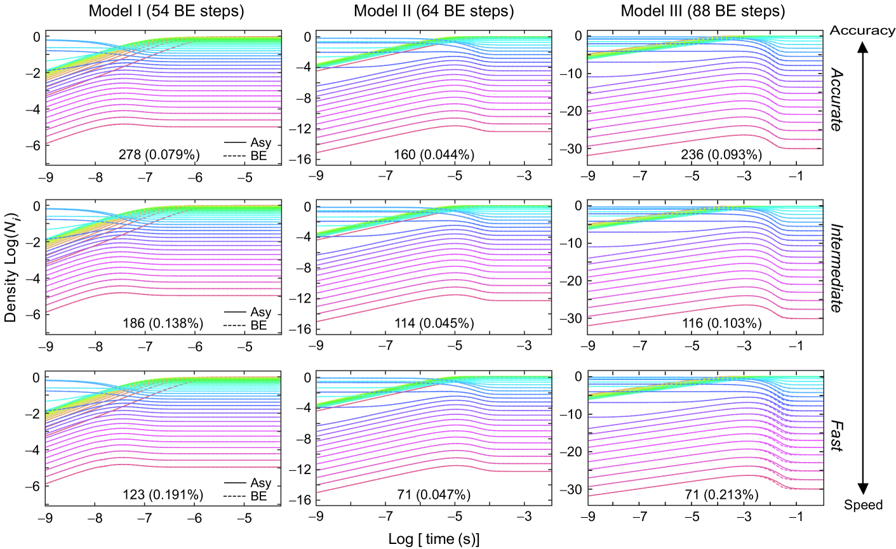
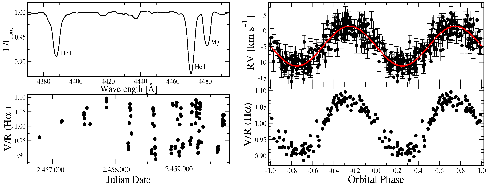

Physics B.S. Student | Undergraduate Research Assistant at the University of Tennessee, Knoxville
Research Projects
Fast Explicit Neutrino Networks (FENN)
Fig. 1 Neutrino Electron Scattering in various models of a Core-Collapse Supernovae
As a Research Assistant and Fellow in the Computational Astrophysics Group at the University of Tennessee, Knoxville, I've assisted in the development computational algorithms for solving complex equations in hydrodynamics and radiation transport applied to the Neutrino Electron Scattering Problem. These developments have been demonstrated in a C++ software suite known as Fast Explicit Neutrino Networks or FENN.
Polluted Black Holes

Figure 2. SERPENS, a 3-D weighted monte carlo N-body algorithm
At the Jet Propulsion Laboratory, California Institute of Technology, I've been working onformulating advanced computational models for stellar pollution, accretion disk dynamics, and black hole dynamics through the use of SERPENS, a 3-D weeighted N-Body simulation under the mentorship of Dr. Apurva Oza.
Binary Be Stars
Figure 3. Spectral analysis to scrutinize the binarity of Be stars.
In my first research project dating back to High School, I wroked under the mentorship of Dr. Anatoly Miroshnichenko at the University of North Carolina Greensboro, During my time at the University of North Carolina at Greensboro, I focused on spectral analysis of Be stars, specifically the Be star Omicron Aquarii.
Grants and Fellowships
I've been fortunate to receive several grants and fellowships to fund my research during my undergraduate years:
- Enhancing Astrophysical Modeling: Integrating WEAKLIB with FENN - Advanced Undergraduate Research Activity (AURA) Grant
- New Approaches to Astrophysical Nucleosynthesis and Neutrino Transport - Department Fellowship
- Travel Grant for Undergraduate Research & Fellowships